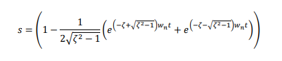
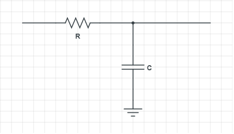
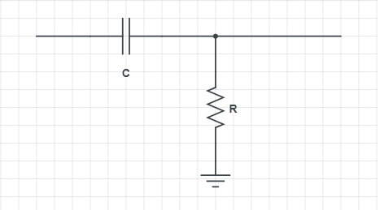
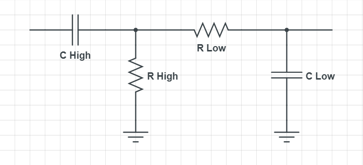

INICIO
BIENVENIDO AL LABORATORIO VIRTUAL.
Esta es una página web creada con la funcion de apoyar a la docencia en temas
relacionados con los sistemas de control y la electrónica.
En esta página encontrarás
tres apartados interactivos, el primero relacionado con controladores PID, el segundo
con filtros pasivos y el tercero con puertas lógicas. A continuación
se explicara
brevemente cada apartado y sus funcionalidades.
Gacias por su visita.
Controlador PID
En este apartado podrá encontrar con una simulación de un sistema de segundo orden sobreamortiguado controlado por un PID. A la hora de realizar esta simulación puedes modificar los valores de Kp, Ki, Kd y el Setpoint. A base de modificar estas variables podrás encontrar los valores que consigan que la salida del sistema se ajuste lo máximo posible al Setpoint sin llegar a que el sistema sea inestable.
Filtros
En este apartado se puede calcular las frecuencias de corte de tres tipos de filtros pasivos diferentes. Para hacer esto, primero se deberá introducir los datos de las resistencias y capacitancias correspondientes al filtro deseado y después hacer click en el botón de 'Calcular' de dicho filtro. Tras esto, aparecerá la frecuencia o frecuencia de corte debajo del botón.
Puertas Logicas
En este apartado se puede observar el funcionamiento de varias puertas lógicas, para esto primero se selecciona la puerta que se desea visualizar. Tras esto, aparecerá en pantalla la puerta seleccionada y debajo de ella las entradas con unas cajas clickeables. Al clickear en cada caja se cambia el valor de la entrada y se pueden observar el cambio de la salida.
CONTROLADOR PID
Sistema Sobreamortiguado
FILTROS
Filtro pasa bajas
Filtro Pasa Altas
Filtro Pasa Banda
PUERTAS LOGICAS
Seleccione una puerta lógica